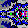

Paul's Fractal Generation Program (ManpWIN) is a Windows-based application for exploring and rendering a wide range of fractals. It is the modern 64-bit evolution of the original MS-DOS program MANP, developed to investigate fractal structures such as the Mandelbrot Set, first popularised in Scientific American (August 1985).
ManpWIN combines ideas from several influential fractal programs including FRACTINT, TieraZon, and FORTRAN-based tools from Art Matrix, while extending these concepts with modern techniques and new areas of exploration.
ManpWIN supports the creation of animations including zoom sequences, Julia set exploration, parameter variation, and oscillator-based motion. Animations are generated as sequences of PNG images or MPEG files.
For a full description of animation types and controls, see the Animation Menu.
For high-quality video output, including sound and advanced encoding options, it is recommended to generate PNG frames and process them using an external tool such as ManpMovieMaker (based on FFmpeg).
ManpMovieMaker is available at:
https://github.com/PaulTheLionHeart/manp-movie-maker
Many fractals in ManpWIN exist in both Mandelbrot and Julia forms. Julia sets are generated using a seed value in the complex plane, allowing a wide variety of related structures to be explored interactively.
Beyond classical fractals, ManpWIN includes experimental systems such as Fibonacci-based structures, Fourier analysis visualisations, chaotic oscillators, and fractal maps.
ManpWIN is built upon decades of experimentation and development, incorporating ideas and contributions from a wide range of sources. Acknowledgment of these contributors can be found in the Acknowledgments section.
The name MANPWIN reflects its origins as a Windows-based successor to the original MS-DOS program MANP (Mandelbrots by Paul).
ManpWIN is designed for modern 24-bit colour displays and continues to evolve, with ongoing work in high-precision arithmetic, performance optimisation, and new fractal exploration techniques.